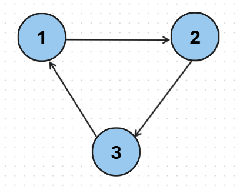

Topological sorting
拓扑排序 \({\rm (Topological~sorting)}\) 是给一个有向无环图也就是 \(\rm DAG\) 所有的点进行一个排序。假设在一个 DAG 里有两个点 u，v 使得有一条有边，则称 v 依赖于 u 。拓扑排序的目标是将所有点按照某一个顺序排序，使得排在后面的点不再被依赖于前面的点。
Khan 算法
观察
DAG中的拓扑序列
在DAG 中发现一个入度为 0 的点一定不会被依赖，所以我们可以先将入度为 0 的点放在拓扑排序序列的最前面。
接下来，所有被依赖于所有入度为 0 的点会加入拓扑排序序列，因为依赖它们的顶点已经在序列里了。
然后，所有被依赖于所有被依赖于所有入度为 0的点会加入\(\dots\)
\(\vdots\)
最后，没有点入度为 0，拓扑排序结束。
我们发现依次访问的顺序就是拓扑排序序列。
有向图（可能有环）
如果是一个有向图（可能有环）会发生什么事情呢？我们分析下面的例子： 
我们可以发现下面的例子进行到第 0 步时入度都不为 0，直接结束了，如果拓扑排序结束而且还有点没有被访问，那就说明这个图有环。
总结
拓扑排序序列
每次找到图中入度为 0 的点，删除这个点和这个点所被依赖的边。重复以上操作直到没有入度为 0 的点。访问的顺序就是构造的拓扑排序序列
判环
如果在拓扑排序某一步结束了，而且还有点没被访问，说明此图有环。
Code
先存所有一开始入度为0的点，放入一个队列 q 里。然后一次取出入度为 0 的点也就是u，删去依赖于u的点v与点 u的边使得 v的入度 -1。如果 v 的入度为 0 ，加入队列 q 并重复此操作。
vector<int> g[MAXN]; // 邻接表
int indegree[MAXN]; // 每一个点的入度
queue<int> q; // 队列
vector<int> topsort() {
for (int i = 1; i <= n; i++) {
for (auot j : g[i]) { // 一条i -> j的边
d[j]++;
}
}
for (int i = 1; i <= n; i++) {
if (d[i] == 0) q.push(i); // 加入入度为0的点
}
vector<int> topseq;
while (!q.empty()) {
int u = q.front();
q.pop();
topseq.push_back(u); // 将节点u加入拓扑排序序列
for (auto v : g[u]) {
d[v]--;
if (d[v] == 0) q.push(v);
}
}
return topseq; // 返回拓扑排序序列
}
拓扑排序+DP
待更新
有要求的拓扑排序
待更新
例题
以下是拓扑排序的经典简单的题目：